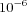
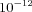

COPASI allows the calculation of generalized sensitivities of a model. This is done by numerical differentiation using finite differences. The user specifies a list of functions to be differentiated and one or two lists of variables. The differentiation is performed with respect to these variables. Since every function in the list is differentiated with respect to every variable in the list the result will generally be a two-dimensional matrix. If also a list of variables for second derivatives is given then all the first derivatives are again differentiated with respect to all the variables in the second list. The result will be a three-dimensional array of second derivatives.
Options for sensitivities calculation
- Delta factor
- This is used to determine the delta value for the finite difference numerical differentiation. The delta is calculated as the product of the delta factor and the current absolute value of the variable. If the resulting value is smaller than the "Delta minimum" parameter, it is discarded and the "Delta minimum" value is used instead. Default value is 
- Delta minimum
- The minimal delta for numerical differentiation. Default value is .